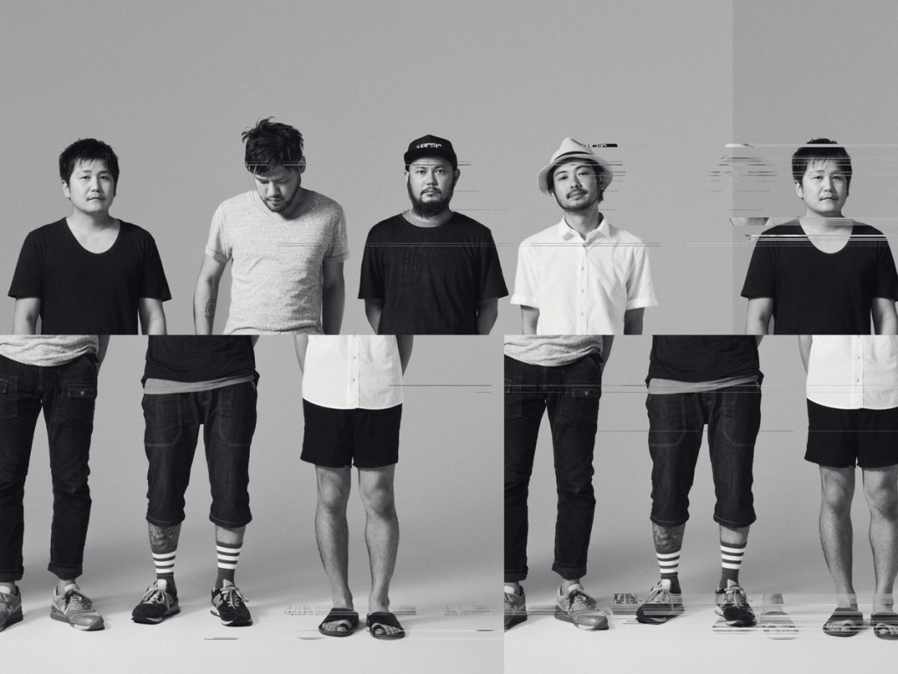

Toe es una banda de música japonesa. A pesar de que se la menciona entre los círculos del post-rock, sus estructuras de sonido y dinámicas son muy similares a las de los artistas del llamado math rock. Toe está compuesto por Kashikura Takashi en las baterías, Mino Takaaki en la guitarra, Yamane Satoshi en el bajo, y Yamazaki Hirokazu en la guitarra. Toe ha tocado formalmente con sus integrantes desde su comienzo en 2000. La gran mayoría de su música es instrumental y también es conocida por sus formatos de guitarra limpia y melódica. Además, las composiciones tienen la repetición de los típicos temas del rock, pero con el uso de sutiles cambios en la batería y el ritmo para hacer un sonido único. La banda ha cambiado su sonido sobre su tenencia musical incorporando guitarras acústicas, piano rhodes, y vibráfonos en sus más recientes lanzamientos.
